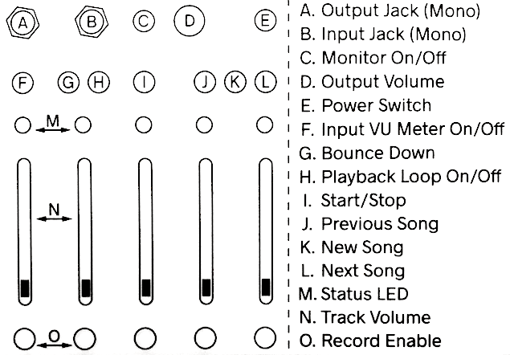
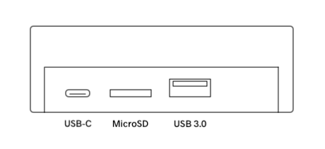
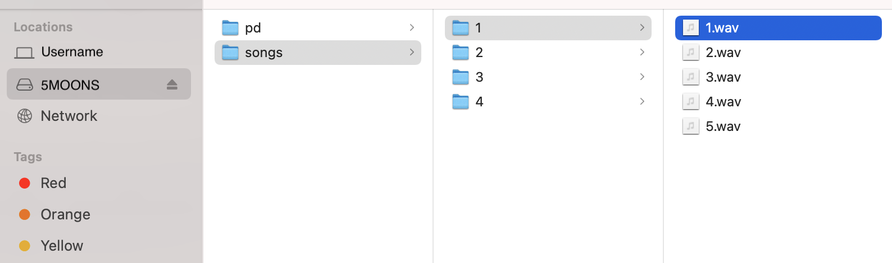
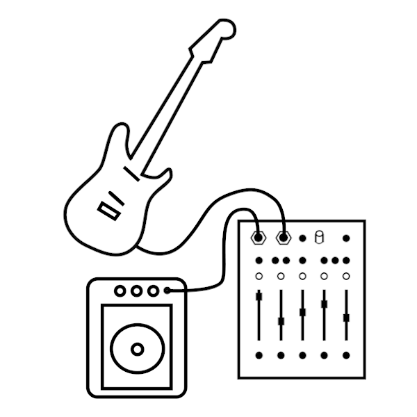
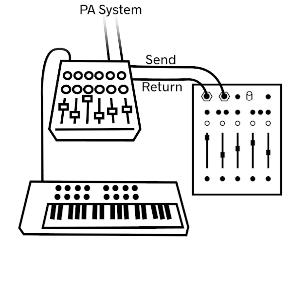
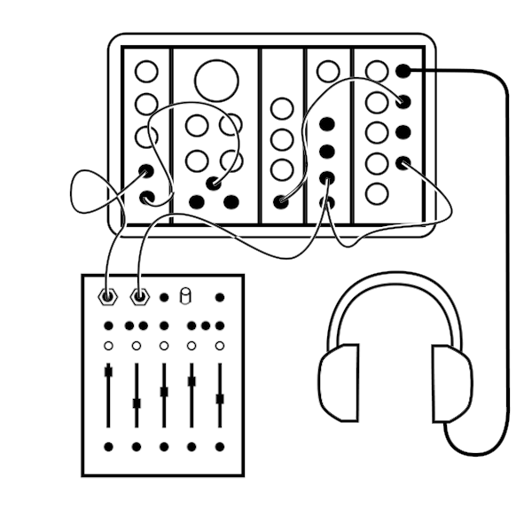
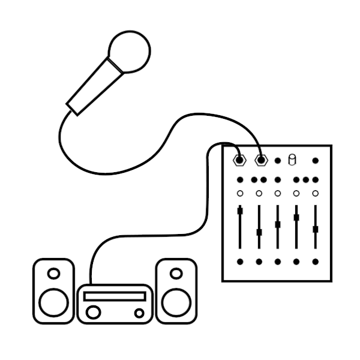

5 Moons User Manual¶
5 Moons is a multitrack recorder! Use this manual to help record and play back songs!
Getting Started¶
Safety First!¶
As with all audio recording devices, make all cable connections and slowly turn up the volume. This will avoid unexpected bursts of sound from your speakers or headphones. Protect your ears!
Quick Setup¶
You probably want to get started right away! Here are a few steps to get you making music.
- Connect the USB power supply to an outlet, then to the USB-C jack on 5 Moons' rear panel.
- Power on by pressing and holding the top-right button until the LEDs flash.
- Connect a 3.5mm audio cable to the output jack on the top left of the front panel.
- Connect a 3.5mm audio cable to the input jack next to the output jack.
- Record enable a track by pressing one of the buttons on the bottom row, and turn up the slider above it.
- Press the play button above the middle slider.
- Make some noise!
- Press the play button again to play back your sound.
The Front Panel¶
Each jack, button, slider, and LED has a corresponding letter. We'll use these letters frequently in this manual. This chart with labels can be conveniently found on 5 Moons' bottom side:

Using Your 5 Moons¶
Power¶
First connect the USB-C power adapter. Connect the adapter to a power outlet, and then connect its plug to the leftmost port on the back of 5 Moons.
Once 5 Moons is connected to power it will automatically power on. The LEDs (M) will illuminate, which means the unit is powered. If 5 Moons is already connected to power, press the Power Switch (E) for one second, or until the LEDs turn on.
The same button is used to power down. Hold the button for one second, or until the LEDs turn purple. Don't fret! Everything you've recorded is saved.

Sound Output¶
5 Moons outputs audio from the top-left 3.5mm audio Output Jack (A). Connect a mono 3.5mm cable to speakers or an amplifier.
Audio format: 48 kHz, 16-bit.
Sound Input¶
5 Moons inputs audio from the second-to-top-left 3.5mm audio Input Jack (B). Connect a cable to an instrument, synthesizer, mixer, microphone, electric guitar...
Toggle Monitor On/Off (C) to hear incoming audio.
Hold Input VU Meter On/Off (F) to see the incoming audio level and to prevent clipping.
Audio format: 48 kHz, 16-bit.
Start/Stop (Transport)¶
Start/Stop (I) starts and stops playback.
By default, 5 Moons will play song from the beginning, and stop playback once all tracks have reached their end. To hear the song as a loop, toggle Playback Loop On/Off (H). This can be activated during playback or when 5 Moons is stopped.
Volume Control¶
5 Moons has two forms of volume control. The Output Volume (D) controls the overall output level. The verticle sliders control individual Track Volume (N).
Record¶
Set a track to record by pressing Record Enable (O). Recording starts when Start/Stop is toggled On. If 5 Moons is already playing, recording starts once a Record Enable button is pressed. Only one track can be recorded to at a time.
Bouncing Down¶
Press Bounce Down (G) to record the current audio to a single track on a new song. Bouncing starts the moment the button is pressed, and ends when either Start/Stop is pressed, or when Bounce Down is pressed again. You will then be taken to the new song. One green LED will appear above the left-most track. Adjust the volume of this track to hear your sounds (if this track was turned down before or during the bounce down, you won't hear your sound without adjusting the slider back up).
Note: When bouncing, Previous Song, New Song, and Next Song buttons are disabled. Track Volumes are reflected in Bounce Downs, but Output Volume level is not.
Navigating Songs¶
5 Moons comes with some songs on it that you can navitage through. Have a listen to some examples of what you can make. Select the Next Song (J), Previous Song (L), or start fresh with a New Song (K). As more songs are made, there will be more songs to jump through with these buttons. When you've navigated to the newest song and press Next Song, you will be brough back to the first song in the list.
File Management¶
Disk Mode¶
Let's say you like the songs you've made and would like to hear them on a computer. If 5 Moons is powered from a power outlet, turn it off. If it is powered from a computer's usb port, you're halfway there! Connect a USB-C cable (like the one used to power the unit) to a computer's USB port).
While 5 Moons is on and connected to the computer, press and hold all five track buttons simultaniously (this might require two hands). The LEDs will begin a color cycle, indicating that 5 Moons is in Disk Mode.
In Disk Mode, 5 Moons itself is no longer in multitrack recording mode. The buttons will not have their normal functions. Instead each will emit a test tone when pressed. This is purely for testing procedures. Do not be alarmed if you press a button and hear a beep.
File Management in Disk Mode¶
On your computer, open a file browser (Finder for Mac, Explorer for Windows). In the disks, select '5MOONS.' The 'Songs' folder will have show the song currently on 5 Moons in numbered folders. Each song has a WAV file for each track that has audio recorded to it.

Important: 5 Moons is particular about the numbering of Song folder and file names found in the storage partition. If you add or remove folders and/or files please note the following:
- Song Folders: Folder numbers must be continous: 1, 2, 3, .... A list of folders such as: 2, 4, 17 or ...7, 8, 9, 11 can cause issues because there are gaps between numbers.
- Song Files: File names should only be 1.wav, 2.wav, 3.wav, 4.wav, 5.wav. Names that deviate from this convention will not be heard.
Important: When you are done using Disk Mode, first eject the 5MOONS drive from your computer as you would for a standard USB drive or external hard drive.
Exit Disk Mode by holding all five Record Enable buttons at once.
Loading Your Own Songs¶
Just as you can move songs and files from 5 Moons to a computer, you can move songs and files from a computer to 5 Moons. Use something you've already made as a starting point for a new 5 Moons creation.
In the 5 Moons disk in your file browser, open the 'songs' folder. Create a new folder following the same naming convention as the others (the next number in sequence). Add up to 5 WAV files to that folder, renamed 1.wav, 2.wav, etc...
Setup Examples¶
There are so many ways to use 5 Moons. Here are some examples of setups that nurture fun.
Guitar pedal¶
Connect an electric guitar to the input and a guitar amp to the output. Use 5 Moons as a guitar mutlitracker or as a 5-channel loop. Connect it to other pedals for a big rig.

Techno Live Set¶
Is it your turn at Panorama Bar? Connect 5 Moons to a mixer via Send and Return. Any instrument connected to the mixer can be sent to 5 Moons to build a loop, harmonize, or even just to record your set.

Modular¶
5 Moons has 3.5mm TS input and output so you can patch a module into the input and send 5 Moons back out to another module. Please note that 5 Moons is not a eurorack module: the input and output jacks operate at different voltage levels than a eurorack module and are not DC-coupled.

Living room¶
Tour got you beat? Skip studio day and hang on the couch with your friends. Connect a mic to the input and send the output to home speakers. Lay down some acapella beats and freestyles.

Specifications¶
Audio Settings¶
5 Moons records and plays back audio at 16-bit 48kHz. Recorded audio files are in the WAV format.
MicroSD Card¶
The operating system and all recordings are stored on the 5 Moons' microSD card. Each unit comes with an 8 GB card installed. This card can be inserted into a Windows computer to browse files and make changes, just like in Disk Mode. This feature is not supported on Mac, but using 5 Moons in Disk Mode will accomplish the same task.
There is a 1 GB partition for the operating system and a 7 GB partition for audio recordings. At 16-bit 48khz, that's about 20 hours of record time.
If a larger partition for audio recordings is desired, you may use a larger microSD card as long as it is first flashed with the operating system. 5 Moons will detect the remaining space upon its first boot up. The remaining space will become the new audio recording partition.
USB 3.0 Jack¶
There is a USB 3.0 jack on the rear next to the microSD card slot. This jack does not have a specific purpose at the time of this release. Stay tuned for future OS updates.
Burning microSD Card Disk Image¶
Burning a new disk image on the micro SD card will reset your 5 Moons to the factory state. This is useful to update to the latest 5 Moons OS, or to fix a problem with the microSD card.
This will completely wipe the microSD card clean, so make sure to backup anything on there that you need. See Disk Mode for information on downloading your files or moving them to a USB drive. You can also use a brand new card if you wanted to keep your old OS available.
Follow these steps to burn a new microSD card:
-
Download the microSD card disk image to your computer:
https://cgdiskimages.nyc3.digitaloceanspaces.com/5moons-v1.img.zip
Current OS release: 5 Moons v1.0. Requires 8GB or larger microSD card. -
Download the flasher program to your computer: https://www.balena.io/etcher/
- Power down 5 Moons. Disconnect the USB-C cable.
- Locate the thin slit in the rear of the enclosure (between the USB-C port and the USB 3.0 port.)
- Eject the microSD card: Use a pin, paperclip, guitar pick, or another microSD card to first press the black microSD card in, then let spring out gently.
- Insert microSD into your computer (you may need an adapter or card reader)
- Use the Etcher program to burn the OS file on to the SD Card. When Etcher is finished your computer may display a message similar to 'This disk is not readable.' This message is normal and you may click 'Eject' to proceed.
- Remove the microSD card from your computer and reinsert it in 5 Moons. Make sure that the microSD card is going into the socket on the circuit board, as it is easy to drop it into the device. If you can wiggle it a lot, it probably is not in socket. Use the same tool to press it in until you hear/feel a 'click.'
- Restart 5 Moons to confirm your new card is working. The first time it boots from a newly flashed SD card, the OS will resize the storage partition to the available space on the card. The LEDs will be red during this brief process.